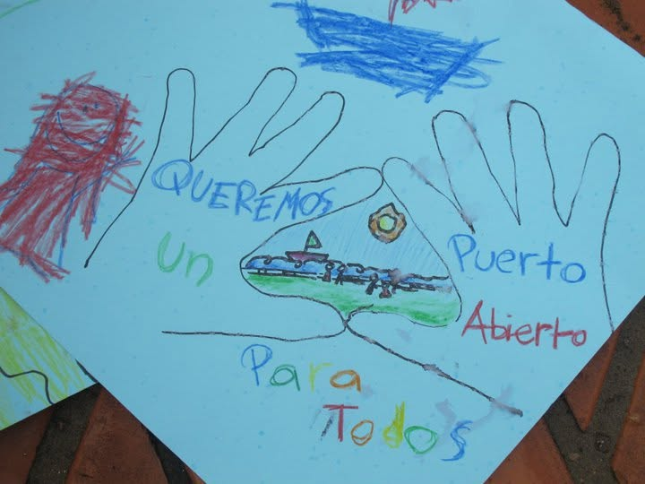

Bienvenidos al Centro Cultural Puerto Abierto
El Centro Cultural Puerto Abierto es una organización dedicada a promover actividades artísticas, culturales y educativas para la comunidad. Durante los últimos años ha ampliado su oferta de talleres, exposiciones, presentaciones y otras actividades abiertas al público.
Actividades destacadas
Arte

Manualidades